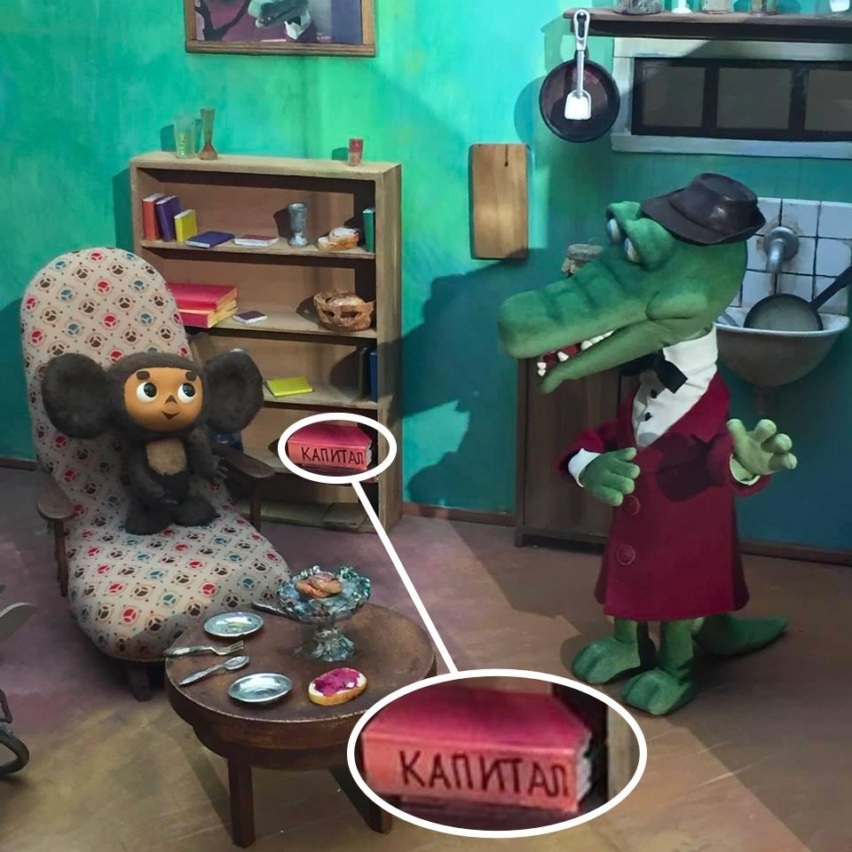
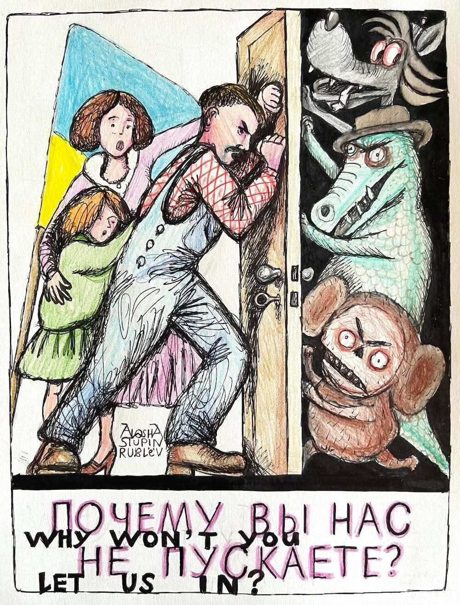
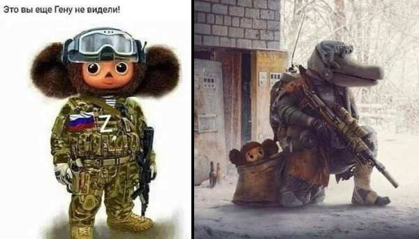
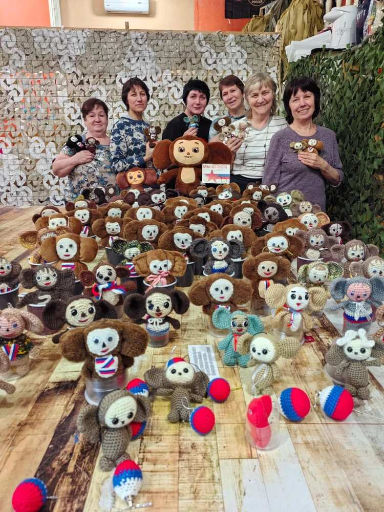

Портрет російського інтелектуала як крокодила¶
Аж до 1960-х років у СРСР ще зберігалася наївна віра в ленінізм, частково підтримувана фізичним знищенням інакодумців у сталінські роки. Але наприкінці 1960-х, коли масовий терор припинився, радянське телебачення показало мультфільм про Крокодила Гену та його друга — фантастичну істоту Чебурашку1. У цьому мультфільмі майже випадково прорвалося справжнє ставлення радянських інтелектуалів до ленінізму. Про це з гумором пише у своєму пародійному нарисі російський журналіст Олексій Муніпов.
«Єдина помітна книга в бібліотеці Крокодила Гени — "Капітал" Маркса. Як це пояснити з урахуванням реалій 1969 року (коли вийшов перший мультфільм про нього)?

Рис.1 Єдина помітна книга в бібліотеці Крокодила Гени — «Капітал» Маркса
Гена — молодий марксист 1960-х, із кола Генріха Батіщева2. Одержимий ідеєю повернення до «справжнього соціалізму», він жадібно читає молодого Маркса, Грамші, Маркузе та Івана Ілліча. Намагається проповідувати піонерам3. Працює на непогані, але дещо ганебні синекурі — як інтелектуал у науково-дослідному інституті, тобто як він сам, «крокодил у зоопарку»; пізніше — як співробітник Вищої комсомольської школи у Вешняках. Естет (люлька, капелюх, краватка-метелик, добре пам'ятна звичка носити оксамитовий халат поверх білої сорочки). У вільний час любить грати на бандонеоні, будучи одним із перших в СРСР, хто відкрив і, як може, пропагує музику Астора П'яццолли, і, за легендою, познайомив з нею молодого Леоніда Дєсятнікова.
Із задоволенням, хоч і без особливого успіху, розробляє плани соціалістичних перетворень у країнах третього світу4, — так він і подружився з Чебурашкою, що приїхав з Африки. Якийсь час працює в Інституті конкретних соціальних досліджень Леваді. Живе в однокімнатній квартирі біля метро «Аеропорт», успадкованій від бабусі — зірки кінематографа сталінської епохи (яка вже не раз виручала його з халепи і виручить знову). Коло знайомств і інтересів природно приводить його до редакцій «Проблем миру і соціалізму»5. У 1990-х, спостерігаючи за приголомшливими поворотами кар'єри своїх колег по журналу — Юрія Карякіна та Володимира Лукіна, — він теж готується зайнятися політикою. І ось постарілий, потовщілий, розчарований Гена — Геннадій Андрійович — розпочинає нове життя.» (Munipov 2016)
Ключова ідея наведеного гумористичного фрагмента полягає в тому, що хоча творці мультфільму й могли не закладати в нього всього цього змісту, сама лише присутність «Капіталу» Маркса на полиці мультиплікаційного крокодила, що своїм виглядом явно пародіює радянську інтелігенцію, свідчить про втрату будь-якого трепету й пошани перед марксизмом у СРСР. Усього за десять років ця легка іронія перетвориться на справжню огиду. Цей вислів Леніна — «Вчення Маркса всесильне, бо воно вірне» — став свого роду протомемом навіть у 1970-х, а пізніше, в 1990-х, деякі стенд-ап комедіанти використовували його у своїх жартах. Згодом багато ленінських цитат перетворилися на мішень для насмішок і глузування в СРСР.
В історіях про Чебурашку Крокодил Гена втілює радянського інтелектуала: одягнутий як освічений, поважний трудівник, він перебирає на себе роль вчителя, організатора та морального авторитету. Чебурашка, навпаки, — безкоренева екзотична істота «з Африки», чия відсутність походження та суспільної функції робить його залежним від керівництва та інтеграції в радянське суспільство з боку Гени. Читаючи цей стосунок алегорично, можна побачити в ньому відображення динаміки між радянським марксизмом та марксизмом Заходу (включно з латиноамериканським) у XX столітті: радянські інтелектуали позиціонували себе як охоронців «справжньої» марксистської доктрини, трактуючи альтернативні або локалізовані марксистські рухи як наївні, незрілі або екзотичні, але такі, що потребують настанови.
Випадок бразильського марксизму яскраво ілюструє цю динаміку. Комуністична партія Бразилії (PCB), яка зазнала сильного впливу Радянського Союзу, прийняла рамку марксизму-ленінізму, сформульовану Третім Інтернаціоналом. Хоча це забезпечило зовнішню модель і відчуття революційної легітимності, водночас породило напруження: радянський вплив підживлював внутрішній фракціонізм, особливо після хрущовської десталінізації 1956 року, і врешті призвів до розколу 1962 року, що породив Комуністичну партію Бразилії (PCdoB). Більше того, консерватори і військові використали страхи перед «міжнародним більшовизмом» для виправдання перевороту 1964 року, демонструючи, як радянська влада над бразильським марксизмом, подібно до опіки Гени над Чебурашкою, була водночас формативною і дестабілізуючою — одночасно джерелом ідентичності і причиною залежності й конфлікту.
Рис.2 Порівняння двох логотипів: Комуністичної партії Бразилії (PCB) та Комуністичної партії Радянського Союзу (КПРС)
З цієї точки зору Чебурашку можна уявити як бразильського, неосвіченого студента, якого московський інтелектуал Крокодил Гена мусить навчати «правильної» і практичної версії марксизму. Пізніше Чебурашка повертається до Бразилії, щоб застосувати набуті знання на практиці під пильним наглядом російських кураторів. У довгостроковій перспективі Бразилія могла б навіть стати шістнадцятою республікою СРСР.
Поступово навіть ця пара — Крокодил Гена і Чебурашка — стала сприйматися як символи російського імперіалізму, подібно до численних пам'ятників Леніну, що колись були розкидані по всій Україні. З 1991 року, після розпаду СРСР, в Україні знесено близько 3 200 статуй Леніна. На карикатурі нижче (намальованій російським художником Ігорем Поночевним у 2025 році) три російських мультиплікаційних персонажі — Крокодил Гена, Чебурашка та Вовк — постають монстрами, що намагаються вдертися до оселі української родини. Іронічно, що навіть цей «молодий марксист 1960-х» у 2020-х став символом російської імперіалістичної агресії. Підпис «Чому ви не пускаєте нас?» сатирично зображує російські культурні символи як інструменти агресивного імперіалізму проти України.

Рис.3 «Чому ви не пускаєте нас?» — Крокодил Гена і Чебурашка вдираються до оселі української родини, Ігор Поночевний, 2025
Ця карикатура — лише іронічне відображення реального використання Чебурашки у російській війні проти України. Чебурашок можна побачити намальованими на російських самохідних реактивних системах залпового вогню, а російські діти та шкільні вчителі виготовляють тисячі іграшок Чебурашки для солдатів армії-окупанта. Вони кажуть: «Це ЧебуРусшка. Ми будемо «чебурусшити» фашистів». У російському вжитку «фашистами» називають усіх, хто захищає Україну від агресії або підтримує її захисників.

Рис.4 «Ви ще не бачили Гени!» Сучасні російські образи Крокодила Гени і Чебурашки як «справжніх героїв» у війні проти України

Рис.5 Російські жінки вручну виготовляють тисячі іграшок Чебурашки, щоб відправити їх як талісмани до російських солдатів, що воюють в Україні.
Чебурашка — улюблений радянський мультиплікаційний персонаж 1960-х — широко використовується в агресії Росії проти України через свою потужну культурну символіку. Для поколінь росіян (і багатьох людей у колишніх радянських республіках, включно з Україною) Чебурашка уособлює невинність, дитинство та спільну радянську ідентичність. Привласнюючи цей образ, Росія намагається досягти кількох цілей.
- Мобілізувати ностальгію — Чебурашка є персонажем, якого майже кожен росіянин знає з теплотою. Використання його у воєнній пропаганді викликає емоційну єдність і звертається до радянської гордості.
- Маскувати агресію невинністю — «милий» персонаж пом'якшує образ війни, роблячи воєнні дії менш жорстокими або навіть ігровими.
- Ствердити культурне домінування — як колись пам'ятники Леніну символізували радянську владу по всій Україні, використання Чебурашки сигналізує, що російська культура досі претендує на спільну радянську спадщину.
- Виробляти пропаганду для дітей — іграшки Чебурашки, які школярі виготовляють для солдатів, нормалізують війну, перетворюючи участь в агресії на патріотичний обов'язок, замаскований під гру.
Цей примхливий мультиплікаційний образ набув темнішого значення в сучасній Росії: Чебурашка тепер використовується як талісман російських загарбницьких сил в Україні — іграшки та символи відправляються на фронт, аби надихати солдатів і «пом'якшувати» публічний образ агресії.
Бібліографія¶
Munipov 2016: Munipov, Alexey. Facebook post, 30 March 2016. https://www.facebook.com/munipov/posts/10207862382130548
Виноски¶
-
Крокодил Гена та Чебурашка — персонажі популярного радянського дитячого мультфільму, створеного в 1960-х роках Едуардом Успенським. Гена зображений як крокодил, що працює в зоопарку і носить костюм, краватку-метелик та капелюх — одяг радянського інтелектуала, що символізує поважність, освіченість і суспільну корисність. Чебурашка — маленька фантастична істота з великими вухами — прибуває «з Африки» в ящику з апельсинами, що одночасно екзотизувало його і відображало радянське захоплення далекими краями, а також виправдовувало відсутність у нього коріння чи ідентичності. ↩
-
Генріх Степанович Батіщев (1932–1990) — видатний радянський філософ і доктор філософських наук, старший науковий співробітник Інституту філософії АН СРСР. Учень впливового марксистського філософа Евальда Ільєнкова, Батіщев розробив оригінальну теоретичну роботу про діалектичні суперечності, людську творчу діяльність та те, що він назвав «глибинним спілкуванням», пізніше включивши православні християнські елементи у свою філософську рамку після навернення в 1977 році. ↩
-
Піонери — молодіжна організація, заснована в 1922 році для дітей 10–15 років, що слугувала головним комуністичним освітнім і громадським рухом в СРСР. Члени організації носили відмінні червоні краватки, брали участь у громадських роботах, спортивних заходах та ідеологічному вихованні, покликаному прищепити соціалістичні цінності. ↩
-
Термін «третій світ» виник під час холодної війни для позначення країн, що не приєдналися ні до Західного капіталістичного блоку (перший світ), ні до Східного комуністичного блоку (другий світ). Згодом термін широко застосовувався до країн, що розвиваються, в Африці, Азії та Латинській Америці. ↩
-
«Проблеми миру і соціалізму» (в оригіналі — рос. «Проблемы мира и социализма») — впливовий міжнародний комуністичний теоретичний журнал, що видавався в Празі з 1958 по 1990 рік і слугував ключовим майданчиком для ідеологічних дискусій між комуністичними партіями світу. ↩